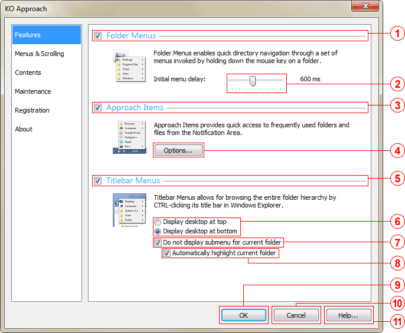

Toggle Folder Menus checkbox
Enables the Folder Menus feature, i.e., quick directory navigation invoked by holding down the mouse key on a folder. Checking this checkbox also specifies that Folder Menus be turned on next time KO Approach is launched.
Adjusts the amount of time the mouse key must remain pressed before KO Approach displays the initial menu for a selected folder. The acceptable range is 300 to 1000 milliseconds, the value incremented by 100 milliseconds.
Toggle Approach Items checkbox
Enables the Approach Items feature. Checking this checkbox also specifies that Approach Items be turned on next time Approach is launched.
Approach Items Options button
Opens a dialog box allowing you to modify menu contents as well as change the order of the elements.
Toggle Titlebar Menus checkbox
Enables the Titlebar Menus feature. Checking this checkbox also specifies that Titlebar Menus be turned on next time Approach is launched.
Folder order group
Specifies the way the folder hierarchy is ordered. The values are as follows:
Do not display submenu for current folder checkbox
When checked, the childmost item will not display the submenu arrow causing no menu to appear upon selection.
Automatically highlight current folder checkbox
When checked, the childmost item will be automatically highlighted.
OK button
Saves the changes and closes the program window.
Cancel button
Discards the changes and closes the program window.
Help... button
Launches this Help file.
Note: The OK, Cancel, and Help buttons are present on all the tabs.